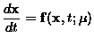
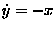

In this chapter we present a few key concepts from dynamical systems theory. Within this mathematical theory, we hope to gain some understanding of nonlinear systems by examining their spatiotemporal data. An underlying assumption throughout this chapter is that the temporal dynamics of the systems being studied has relatively few degrees of freedom - on the order of ten or less.
We illustrate with a simple example.
Consider the 2D autonomous1, linear system:
|  | (3.1) |
|

|
(3.2) |